BEFORE
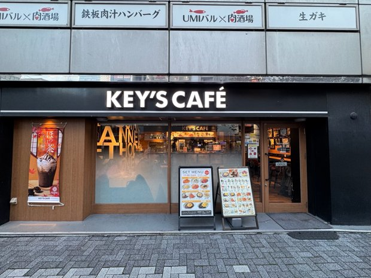
記事（KEY'S CAFÉ Akihabara）に使った撮影写真9枚を、看板や棚の水平線に合わせて回転補正し、余白が出ない最大の長方形に切り抜いたもの。左が元、右が補正後。もともと水平が合っていた3枚は回していない。

看板帯とファサードのラインがもともと水平だったので、そのまま使っている。
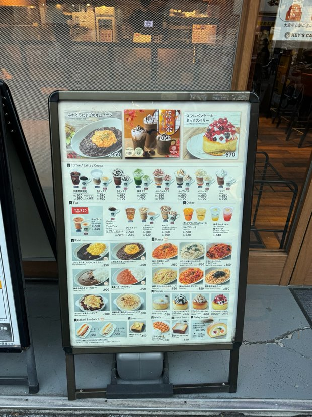
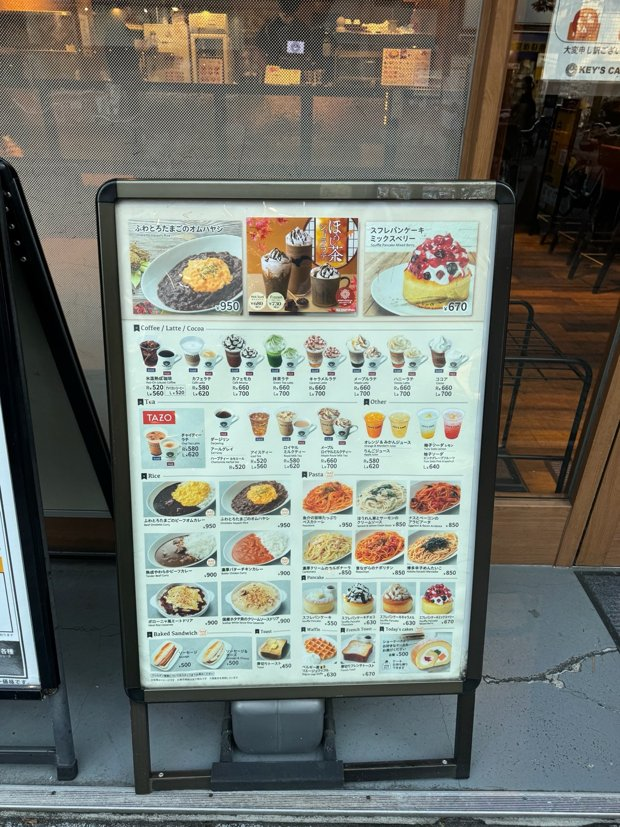
看板の行が水平だったので、そのまま。斜めに見える部分は看板自体の設置角度（透視）で、回転では直らない分。
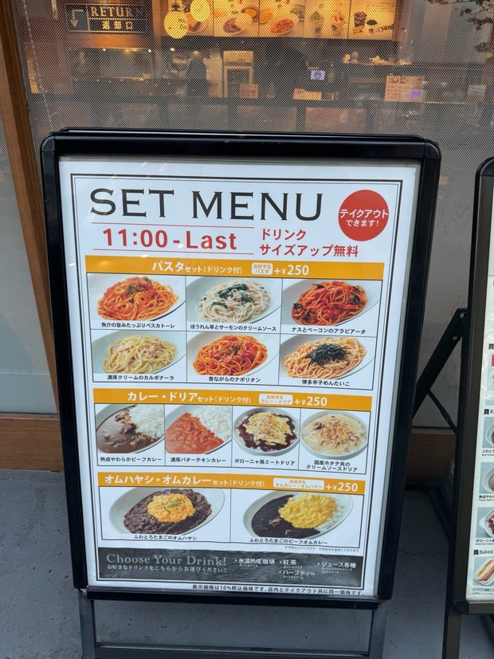
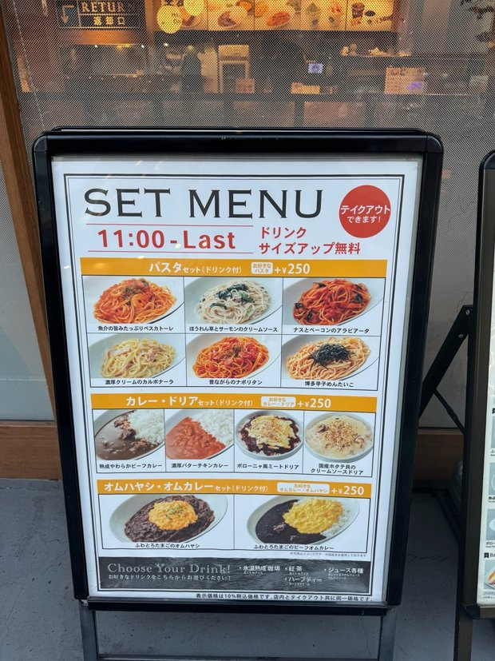
右下がりだったオレンジの帯と「SET MENU」の文字行を水平に戻した。
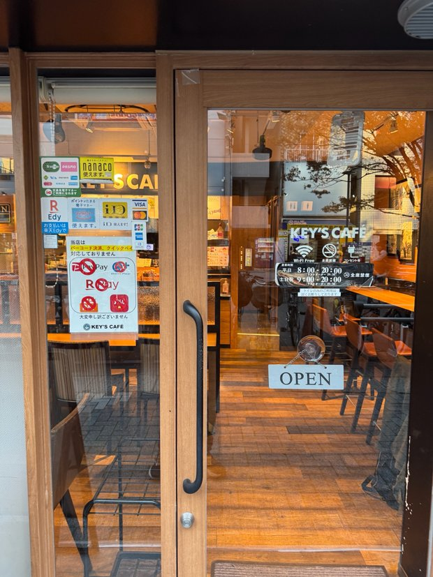
ドア枠の横桟と営業時間シールの向きを基準に補正。
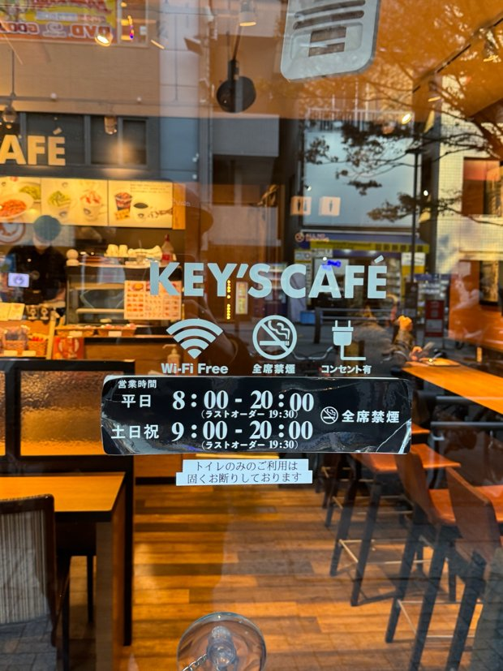
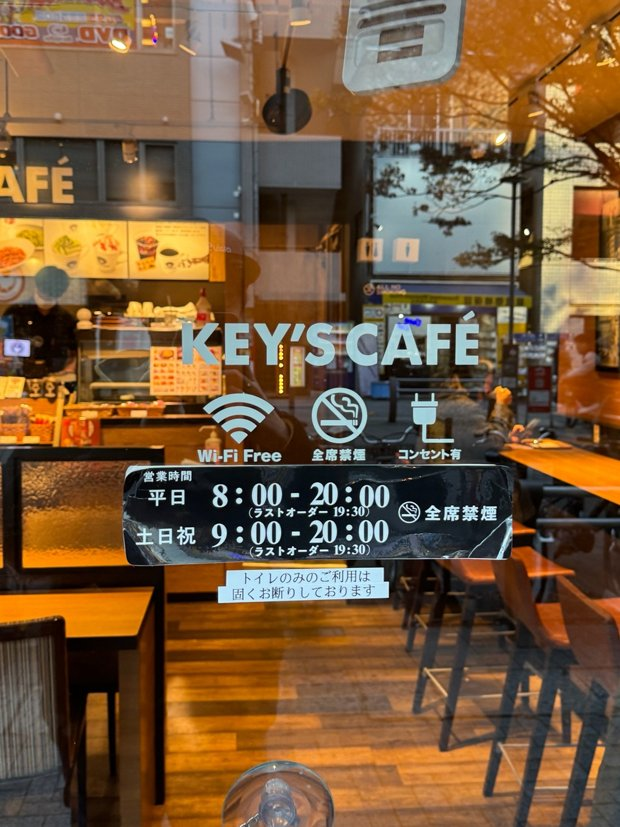
右下がりだった黒いシールを水平寄りに。シール自体の貼り歪みが少し残るので、ガラスのロゴまで傾けないよう補正は控えめに止めた。
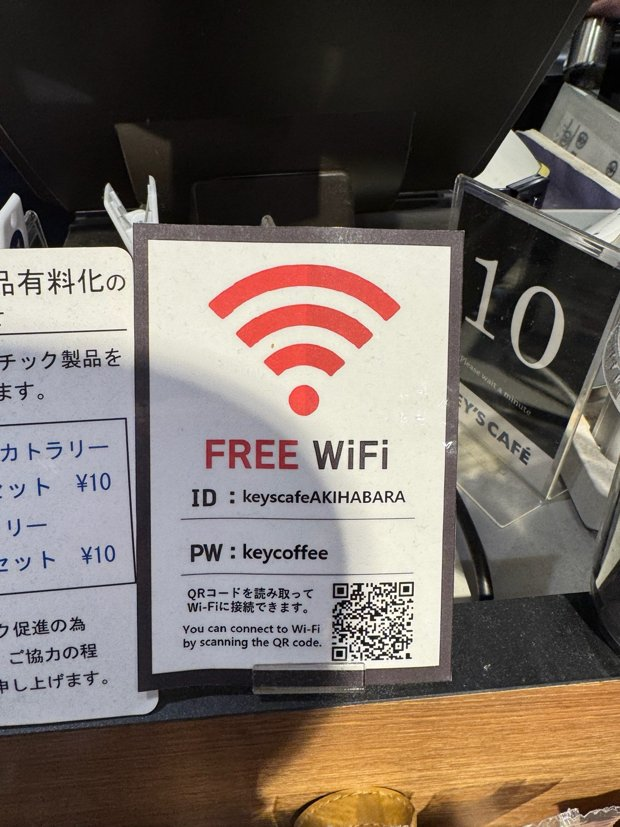
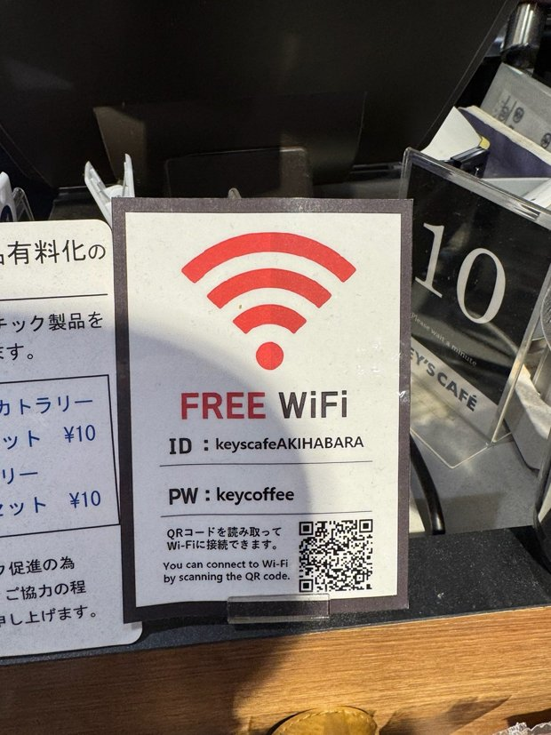
ID／PW の文字行と罫線を水平に。ID・パスワードの文字は切り抜きで欠けていない。
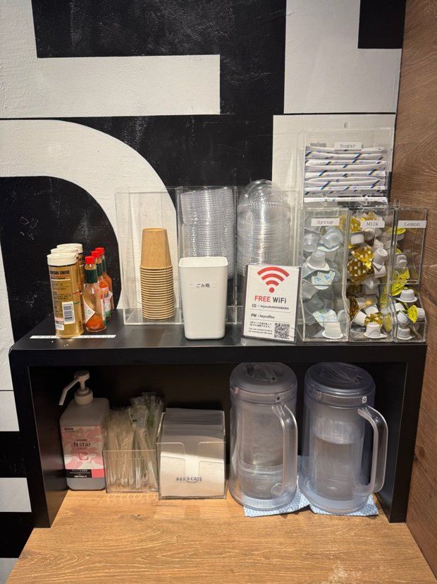
棚の前面ラインが水平だったので、そのまま。記事本文では未使用の写真。
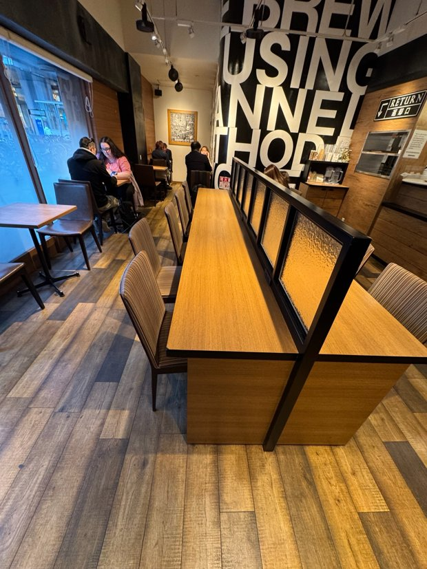
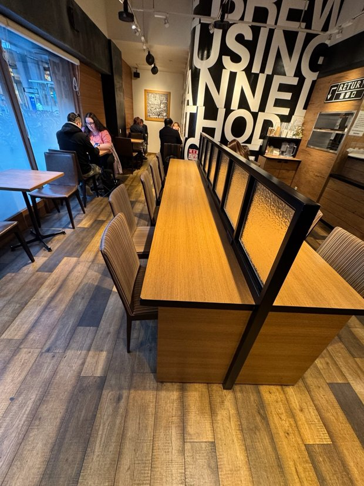
広角の透視が強い写真なので、カウンターのパーティションの縦線を基準に最小限だけ補正。
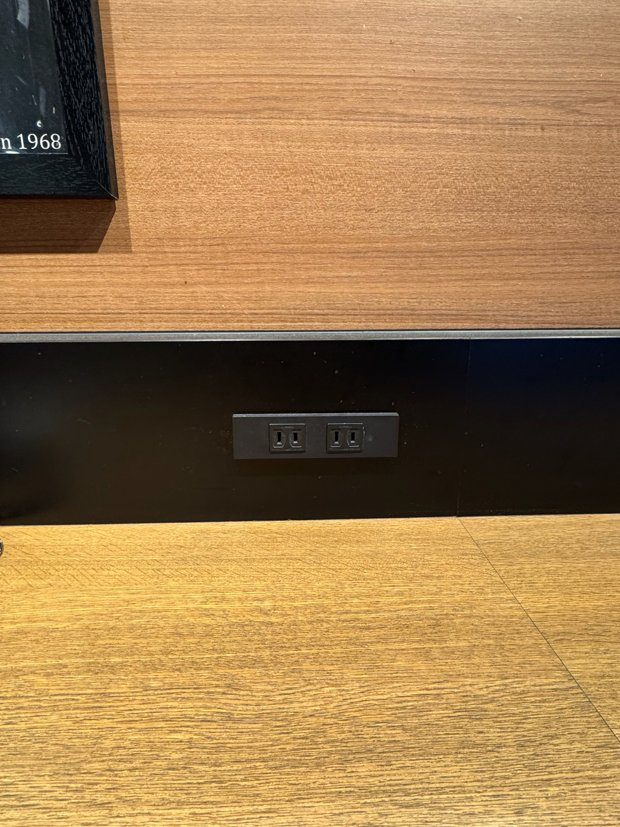
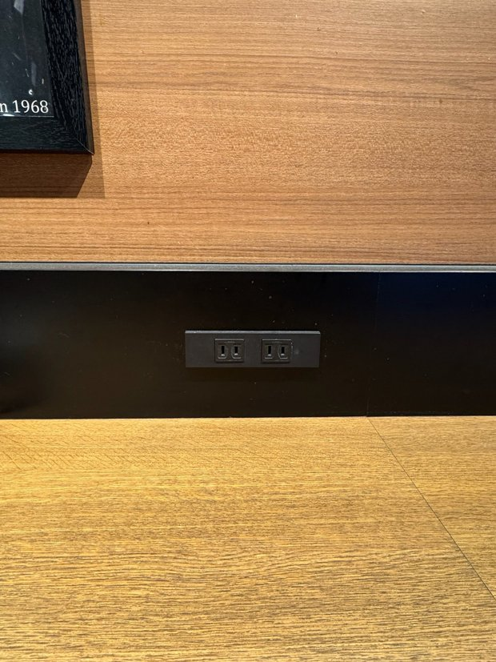
木目パネルと黒帯の境界線、コンセントプレートを水平に。